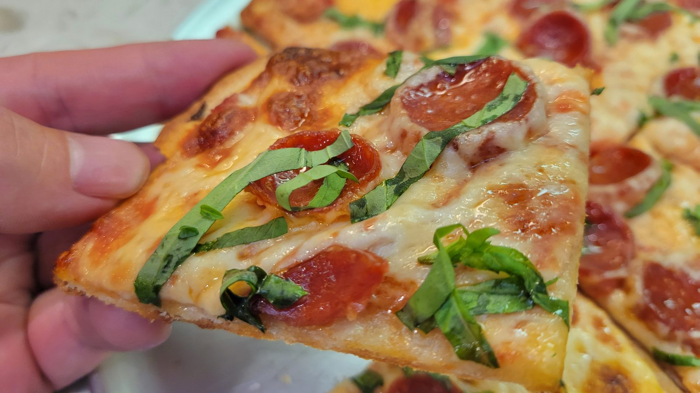

Tavern-Style Thin Crust Pizza

After years of mostly making New York-style and other thicker crust pizzas, this tavern-style thin crust pizza has become my go-to. I first came across this recipe about six months ago and was immediately interested because it was so different from the pizzas I normally make. The cracker-thin crust, square-cut slices, and simple toppings create a pizza that's incredibly easy to keep eating.
Prep Time
30 minutes (plus overnight rest)
Cook Time
15–20 minutes
Total Time
Overnight, plus about 1 hour the next day
Servings
1 large square-cut pizza
Watch the Video
Ingredients
- 300 g (about 2½ cups) all-purpose flour
- 180 g (¾ cup) water
- 4 g (¾ tsp) kosher salt
- 2 g (½ tsp) instant yeast
- 15 g (1 tablespoon) olive oil
- ¾ cup (180 ml) tomato sauce
- 2 tablespoons finely grated Parmesan
- 6 oz (170 g) low-moisture mozzarella, shredded
- 2–3 oz (60–85 g) pepperoni
- Fresh basil, for serving
- Olive oil, for the pan
Instructions
- Mix the flour, water, salt, yeast, and olive oil until a shaggy dough forms. Knead until smooth.
- Cover and refrigerate overnight.
- The next day, let the dough sit at room temperature until it is easy to press out.
- Heat the oven to 500°F (260°C) with a stone or steel if you have one, or use an oiled sheet pan.
- Press the dough very thin on an oiled pan, working it into a rectangle. It should be cracker-thin, not a New York stretch.
- Spread on a thin layer of sauce. Scatter the Parmesan, then the mozzarella, then the pepperoni.
- Bake until the crust is deeply browned and crisp and the cheese is bubbling, 12–18 minutes depending on your oven.
- Finish with basil. Cool a minute, then cut into squares.
Chef’s Notes
This started from J. Kenji López-Alt's tavern-style pizza, which is what got me interested in the style. The version here is my home-oven working draft, not a reprint of that recipe. The overnight rest and a very thin press are what make it eat like tavern pizza. Every time I make it, it seems to disappear faster than expected.
Equipment Used
- Mixing bowl
- Sheet pan
- Home oven
- Pizza stone or steel (optional)